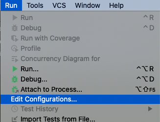
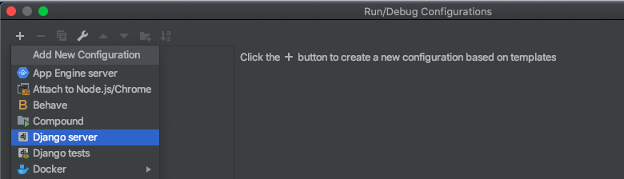
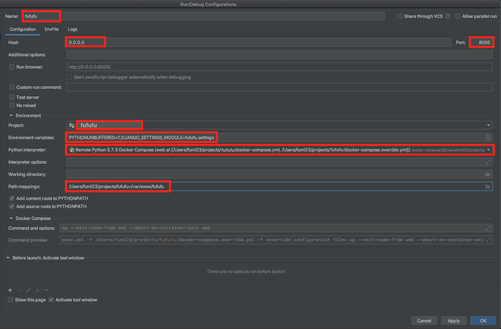
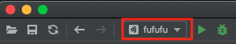
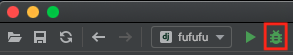

docker-compose で動かしている Django アプリケーションを PyCharm で Dubug する
目次
実行/デバッグ構成を作成する
-
Run -> Edit Configurations...
 -
Run/Debug Configurations ->
+ボタン -> Django serverずっと
Dockerのほうを選ぶんだろうと思っていたけど、違ってた
-
設定値を書く
Name: 任意の名前
-
Host:
0.0.0.0 -
Port:
8000 Project: デバッグ対象のプロジェクトを選択する
-
Environment variables: デフォルトに加えて
;DJANGO_SETTINGS_MODULE=fufufu.settingsを追記 Python interpreter: デバッグ対象のプロジェクトの interpreter を選択する
Path mappings: ローカルのアプリのプロジェクトのパス:コンテナ内のアプリのパス (なくても動くかも)
Apply -> OK
デバッグする
-
左上のほうにあるプルダウンで↑で作った「実行/デバッグ構成」選択する
 -
虫みたいなマークを押下するとデバッグモードでアプリが起動する
 あとは、コード上のブレイクしたいポイントに印をつけて、アプリを呼び出す